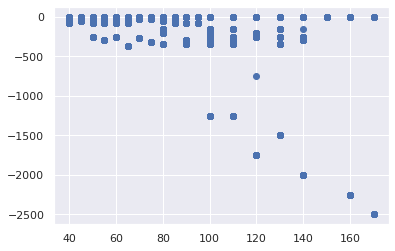

import numpy as np
import pandas as pd
import statsmodels.api as sm
import matplotlib.pyplot as plt
import seaborn as sns
sns.set()
from sklearn.cluster import KMeans
choice = pd.read_csv("./IGTdataSteingroever2014/choice_100.csv")
choice
---------------------------------------------------------------------------
FileNotFoundError Traceback (most recent call last)
/tmp/ipykernel_113220/2734729813.py in <module>
----> 1 choice = pd.read_csv("./IGTdataSteingroever2014/choice_100.csv")
2 choice
~/miniconda3/envs/JupyterBook/lib/python3.7/site-packages/pandas/util/_decorators.py in wrapper(*args, **kwargs)
309 stacklevel=stacklevel,
310 )
--> 311 return func(*args, **kwargs)
312
313 return wrapper
~/miniconda3/envs/JupyterBook/lib/python3.7/site-packages/pandas/io/parsers/readers.py in read_csv(filepath_or_buffer, sep, delimiter, header, names, index_col, usecols, squeeze, prefix, mangle_dupe_cols, dtype, engine, converters, true_values, false_values, skipinitialspace, skiprows, skipfooter, nrows, na_values, keep_default_na, na_filter, verbose, skip_blank_lines, parse_dates, infer_datetime_format, keep_date_col, date_parser, dayfirst, cache_dates, iterator, chunksize, compression, thousands, decimal, lineterminator, quotechar, quoting, doublequote, escapechar, comment, encoding, encoding_errors, dialect, error_bad_lines, warn_bad_lines, on_bad_lines, delim_whitespace, low_memory, memory_map, float_precision, storage_options)
584 kwds.update(kwds_defaults)
585
--> 586 return _read(filepath_or_buffer, kwds)
587
588
~/miniconda3/envs/JupyterBook/lib/python3.7/site-packages/pandas/io/parsers/readers.py in _read(filepath_or_buffer, kwds)
480
481 # Create the parser.
--> 482 parser = TextFileReader(filepath_or_buffer, **kwds)
483
484 if chunksize or iterator:
~/miniconda3/envs/JupyterBook/lib/python3.7/site-packages/pandas/io/parsers/readers.py in __init__(self, f, engine, **kwds)
809 self.options["has_index_names"] = kwds["has_index_names"]
810
--> 811 self._engine = self._make_engine(self.engine)
812
813 def close(self):
~/miniconda3/envs/JupyterBook/lib/python3.7/site-packages/pandas/io/parsers/readers.py in _make_engine(self, engine)
1038 )
1039 # error: Too many arguments for "ParserBase"
-> 1040 return mapping[engine](self.f, **self.options) # type: ignore[call-arg]
1041
1042 def _failover_to_python(self):
~/miniconda3/envs/JupyterBook/lib/python3.7/site-packages/pandas/io/parsers/c_parser_wrapper.py in __init__(self, src, **kwds)
49
50 # open handles
---> 51 self._open_handles(src, kwds)
52 assert self.handles is not None
53
~/miniconda3/envs/JupyterBook/lib/python3.7/site-packages/pandas/io/parsers/base_parser.py in _open_handles(self, src, kwds)
227 memory_map=kwds.get("memory_map", False),
228 storage_options=kwds.get("storage_options", None),
--> 229 errors=kwds.get("encoding_errors", "strict"),
230 )
231
~/miniconda3/envs/JupyterBook/lib/python3.7/site-packages/pandas/io/common.py in get_handle(path_or_buf, mode, encoding, compression, memory_map, is_text, errors, storage_options)
705 encoding=ioargs.encoding,
706 errors=errors,
--> 707 newline="",
708 )
709 else:
FileNotFoundError: [Errno 2] No such file or directory: './IGTdataSteingroever2014/choice_100.csv'
loss = pd.read_csv("./IGTdataSteingroever2014/lo_100.csv")
win = pd.read_csv("./IGTdataSteingroever2014/wi_100.csv")
loss
| Losses_1 | Losses_2 | Losses_3 | Losses_4 | Losses_5 | Losses_6 | Losses_7 | Losses_8 | Losses_9 | Losses_10 | ... | Losses_91 | Losses_92 | Losses_93 | Losses_94 | Losses_95 | Losses_96 | Losses_97 | Losses_98 | Losses_99 | Losses_100 | |
|---|---|---|---|---|---|---|---|---|---|---|---|---|---|---|---|---|---|---|---|---|---|
| Subj_1 | -200 | -150 | 0 | -250 | 0 | 0 | 0 | 0 | 0 | 0 | ... | 0 | 0 | -350 | 0 | 0 | 0 | 0 | 0 | 0 | -1250 |
| Subj_2 | 0 | 0 | 0 | 0 | 0 | 0 | -50 | 0 | 0 | 0 | ... | 0 | 0 | 0 | -250 | -1250 | 0 | 0 | 0 | 0 | 0 |
| Subj_3 | 0 | 0 | -50 | -300 | 0 | -1250 | 0 | 0 | 0 | -50 | ... | -50 | 0 | -200 | 0 | 0 | 0 | 0 | 0 | 0 | 0 |
| Subj_4 | -250 | -50 | 0 | 0 | -200 | 0 | 0 | 0 | 0 | -1250 | ... | 0 | 0 | 0 | 0 | -50 | 0 | 0 | 0 | -50 | 0 |
| Subj_5 | 0 | 0 | 0 | -1250 | 0 | -50 | 0 | 0 | 0 | 0 | ... | 0 | 0 | 0 | -1250 | 0 | 0 | 0 | -50 | 0 | 0 |
| ... | ... | ... | ... | ... | ... | ... | ... | ... | ... | ... | ... | ... | ... | ... | ... | ... | ... | ... | ... | ... | ... |
| Subj_500 | 0 | 0 | 0 | 0 | 0 | 0 | 0 | -150 | 0 | 0 | ... | -250 | -25 | -200 | 0 | -300 | -50 | 0 | 0 | 0 | 0 |
| Subj_501 | 0 | 0 | 0 | 0 | 0 | -50 | 0 | -50 | 0 | 0 | ... | 0 | 0 | 0 | -1250 | 0 | -250 | 0 | 0 | -50 | 0 |
| Subj_502 | 0 | 0 | 0 | 0 | 0 | 0 | -150 | 0 | 0 | 0 | ... | 0 | -250 | -25 | 0 | 0 | 0 | 0 | 0 | -1250 | 0 |
| Subj_503 | 0 | 0 | 0 | 0 | 0 | 0 | 0 | 0 | 0 | 0 | ... | 0 | 0 | 0 | -200 | 0 | 0 | 0 | -250 | 0 | 0 |
| Subj_504 | 0 | 0 | -50 | 0 | 0 | 0 | 0 | 0 | 0 | 0 | ... | 0 | -50 | -350 | 0 | -25 | 0 | 0 | 0 | 0 | 0 |
504 rows × 100 columns
plt.scatter(win, loss)
# plt.xlim(-180,180)
# plt.ylim(-90,90)
plt.show()

x = data.iloc[:,1:3] # 1t for rows and second for columns
x
| Choice_2 | Choice_3 | |
|---|---|---|
| Subj_1 | 1 | 2 |
| Subj_2 | 1 | 4 |
| Subj_3 | 2 | 3 |
| Subj_4 | 3 | 4 |
| Subj_5 | 2 | 2 |
| ... | ... | ... |
| Subj_500 | 2 | 1 |
| Subj_501 | 4 | 4 |
| Subj_502 | 4 | 3 |
| Subj_503 | 4 | 1 |
| Subj_504 | 3 | 3 |
504 rows × 2 columns
kmeans = KMeans(3)
kmeans.fit(x)
KMeans(n_clusters=3)
identified_clusters = kmeans.fit_predict(x)
identified_clusters
array([0, 2, 2, 2, 0, 2, 0, 0, 1, 1, 2, 2, 0, 1, 1, 1, 0, 2, 1, 2, 2, 1,
0, 0, 0, 2, 2, 2, 0, 2, 1, 2, 1, 1, 1, 2, 1, 1, 2, 0, 1, 2, 1, 0,
0, 2, 0, 2, 0, 0, 2, 2, 1, 2, 2, 0, 0, 2, 2, 0, 0, 0, 2, 0, 0, 0,
2, 0, 0, 1, 0, 2, 2, 2, 0, 0, 0, 0, 1, 2, 2, 1, 1, 2, 2, 0, 2, 0,
0, 2, 2, 2, 2, 2, 1, 1, 1, 1, 1, 2, 1, 2, 2, 0, 0, 1, 0, 1, 2, 0,
0, 1, 0, 1, 2, 1, 0, 2, 2, 0, 2, 1, 2, 2, 2, 2, 2, 2, 2, 1, 1, 1,
0, 0, 0, 1, 1, 1, 0, 2, 2, 1, 1, 2, 1, 1, 1, 0, 0, 1, 0, 2, 1, 1,
2, 0, 1, 2, 1, 1, 1, 0, 2, 2, 0, 0, 0, 1, 0, 2, 1, 2, 2, 1, 0, 0,
1, 0, 2, 1, 0, 2, 2, 2, 1, 0, 0, 2, 2, 0, 0, 0, 1, 0, 0, 2, 2, 0,
0, 0, 0, 2, 1, 0, 1, 0, 0, 2, 1, 0, 2, 1, 2, 1, 0, 2, 0, 1, 0, 2,
2, 2, 2, 2, 1, 2, 2, 0, 2, 0, 0, 0, 2, 1, 0, 2, 1, 0, 1, 2, 0, 1,
1, 1, 0, 0, 2, 0, 2, 2, 1, 0, 0, 2, 2, 0, 0, 2, 0, 2, 1, 0, 1, 1,
0, 0, 1, 0, 1, 0, 2, 0, 1, 2, 1, 2, 2, 1, 2, 0, 0, 1, 0, 0, 2, 1,
2, 2, 2, 2, 0, 0, 0, 2, 2, 1, 0, 0, 1, 0, 2, 0, 1, 0, 2, 0, 2, 0,
0, 1, 2, 1, 1, 1, 2, 2, 2, 1, 2, 0, 1, 1, 0, 2, 0, 1, 0, 0, 2, 2,
1, 0, 2, 1, 0, 1, 0, 2, 0, 1, 0, 0, 0, 2, 1, 1, 2, 0, 0, 0, 2, 0,
2, 0, 2, 1, 2, 2, 2, 0, 2, 2, 2, 1, 2, 1, 0, 1, 2, 2, 0, 2, 2, 1,
2, 1, 2, 0, 2, 1, 0, 0, 0, 2, 0, 2, 0, 2, 0, 0, 2, 2, 1, 0, 0, 1,
2, 2, 1, 2, 0, 2, 1, 0, 1, 0, 2, 2, 0, 1, 2, 1, 0, 0, 2, 2, 0, 1,
0, 1, 2, 2, 0, 0, 2, 1, 2, 0, 0, 0, 2, 2, 2, 0, 1, 2, 1, 1, 0, 0,
2, 2, 0, 2, 1, 0, 1, 1, 1, 0, 1, 2, 2, 0, 1, 2, 0, 1, 0, 1, 1, 2,
1, 0, 2, 1, 1, 2, 1, 0, 0, 1, 0, 2, 0, 1, 2, 0, 1, 2, 0, 1, 1, 1,
1, 0, 0, 1, 0, 1, 1, 0, 1, 1, 0, 1, 1, 1, 1, 0, 2, 1, 1, 2],
dtype=int32)
data_with_clusters = data.copy()
data_with_clusters['Clusters'] = identified_clusters
plt.scatter(data_with_clusters['Choice_2'],data_with_clusters['Choice_3'],c=data_with_clusters['Clusters'],cmap='rainbow')
<matplotlib.collections.PathCollection at 0x7f51de5c5ed0>